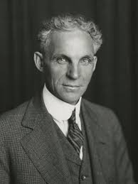
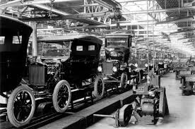

Historia de Ford
Ford Motor Company fue fundada el 16 de junio de 1903 por Henry Ford en Detroit, Estados Unidos. Su visión revolucionó la industria automotriz: producir vehículos confiables y accesibles para que cualquier persona pudiera tener un auto.
En 1908, Ford lanzó el Modelo T, el primer automóvil fabricado en masa. Con la introducción de la línea de montaje móvil en 1913, Ford redujo drásticamente los tiempos de producción, convirtiéndose en un referente mundial de la industria.
El éxito del Modelo T permitió a Ford expandirse rápidamente. Durante las décadas siguientes, la marca lanzó modelos que marcaron épocas, como el Ford V8 y más adelante el legendario Mustang, símbolo del automovilismo estadounidense.

Hoy Ford continúa siendo una de las compañías automotrices más influyentes del mundo, con presencia global y una fuerte apuesta por la innovación, la tecnología híbrida y la electrificación.